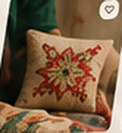
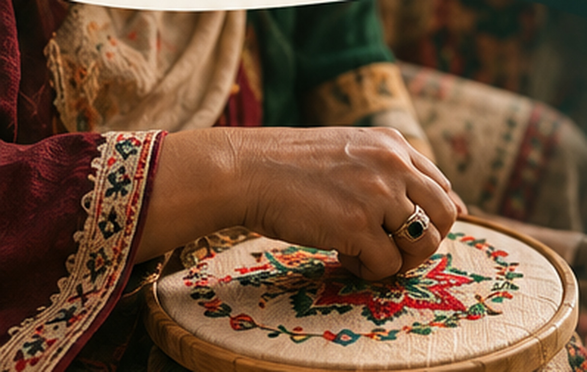
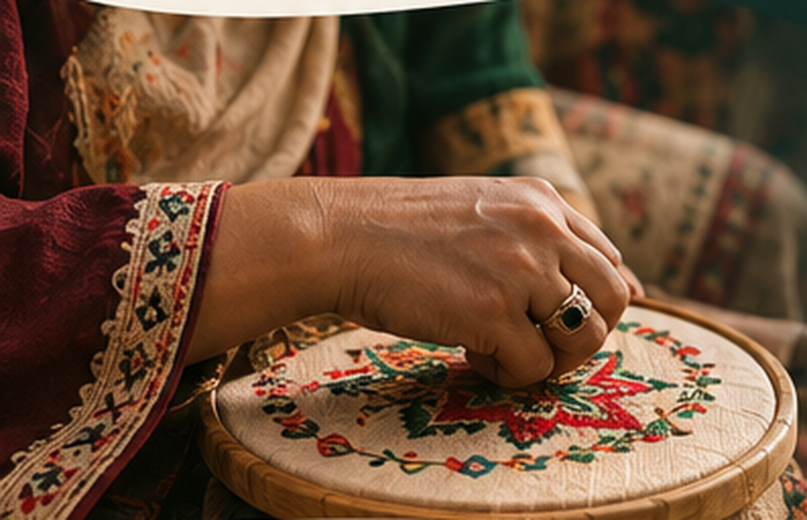

The First
Thread.الخيط الأوّل
Every meaningful connection starts with a single thread. Be among the first to experience NASJ—where handcrafted gifts create opportunities for women artisans.
Early access for companies,
associations and artisans.
Gifts with a
real story.


From your brief
to their craft.
One connected journey
A connected space
for meaningful gifting.
NASJ connects companies with associations, cooperatives and women artisans—turning thoughtful gifts into real work and stronger communities.
- ✓ Discover artisan-crafted gifts
- ✓ Share a brief and request a quotation
- ✓ Coordinate craft, production and delivery
- ✓ Keep the people behind every piece visible
Gifts with a
real story.
Many meaningful connections.

✳ The First Thread · الخيط الأوّل
Help shape what comes next.
Before NASJ opens more widely, we’re inviting a small group of companies, associations, and artisans to explore the early experience, test the workflows, and tell us what needs to improve.
Experience early
Explore the product before the public launch.
Share feedback
Help us make the important details work better.
Build with purpose
Support a platform designed around real people.
Three steps.
One shared beginning.
No complicated onboarding. Tell us who you are, we’ll review applications, and selected testers can explore the alpha experience.
Raise your hand.
Share who you are and what you’d like to try.
Get invited.
We review applications and invite early testers.
Explore & shape.
Test the platform and send your feedback.
Are you part of
the craft world?
Whether you’re an independent artisan, a cooperative, a workshop, or an association working with handmade crafts, we’d like to learn about your work.
Open to everyone. No alpha invitation required.
Ready to weave
the first thread?
Request private alpha access and be among the first to help us shape the NASJ experience.
Not joining as an alpha tester? Share information about your artisan work instead.